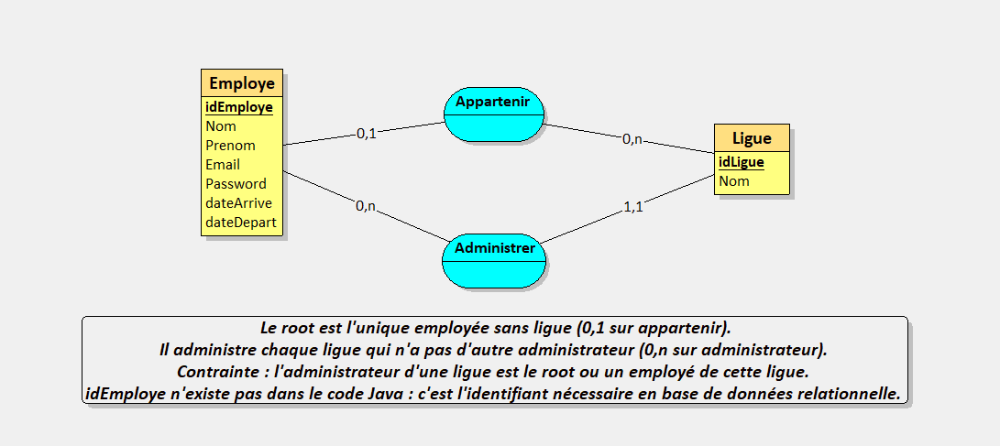
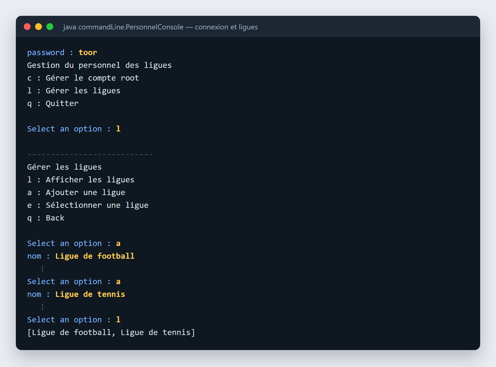
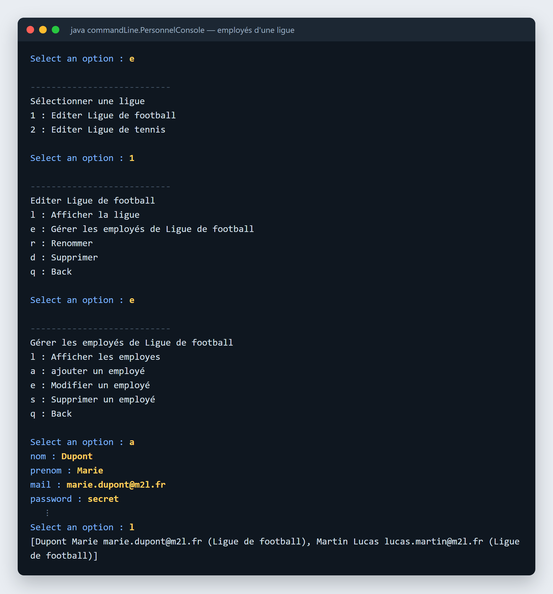
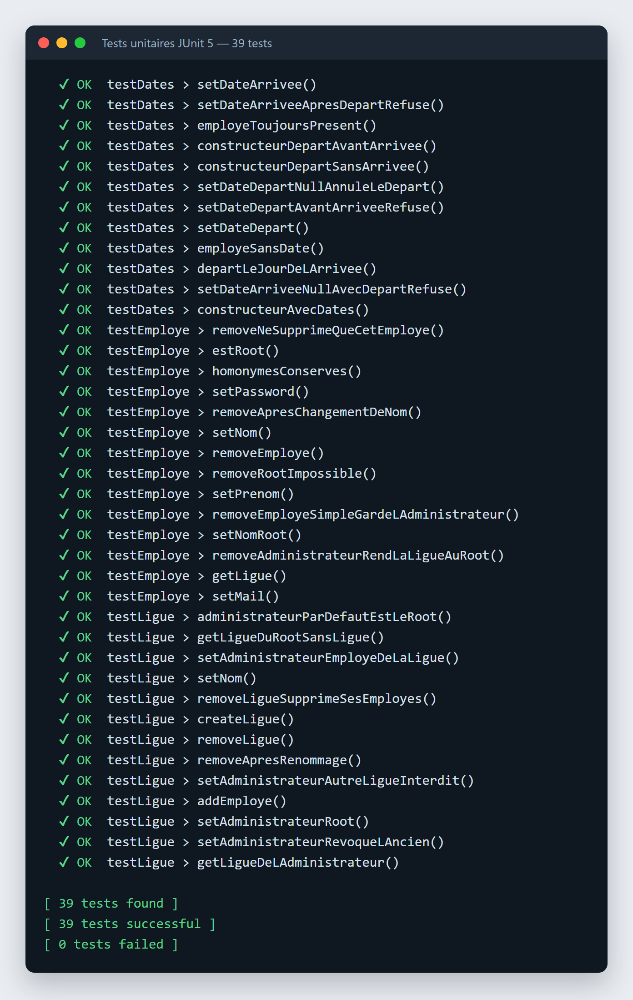
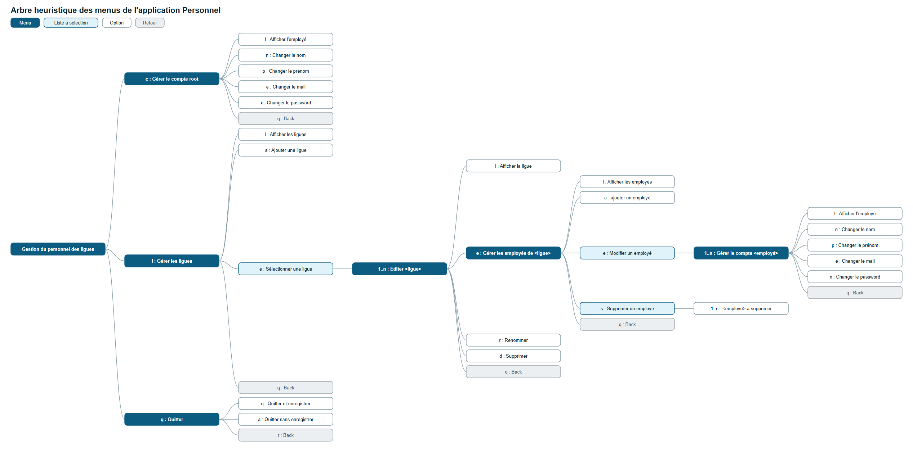

Projets · Atelier professionnel
Personnel — gestion des employés des ligues
Application Java de la Maison des Ligues de Lorraine (M2L) qui recense les employés de chaque ligue. Notre mission : la rendre multi-utilisateurs grâce à une base de données et mettre en place trois niveaux de droits.
Contexte
Le besoin
Un responsable de la M2L utilise une petite application pour gérer les employés des ligues. Elle fonctionne uniquement en ligne de commande et pour un seul utilisateur : les données sont enregistrées dans un fichier sur son poste. La M2L souhaite désigner un administrateur par ligue, chargé de recenser les employés de sa ligue.
Trois niveaux d'habilitation sont demandés :
- EmployéConsulte l'application comme un annuaire, sans droit d'écriture.
- Administrateur de ligueGère les employés de sa propre ligue (application bureau).
- Super-administrateurAccès en écriture à tous les employés et gestion des administrateurs de ligue (ligne de commande).
Contrainte imposée : conserver l'architecture 3-tiers de l'application.
Point de départ
Ce qui était fourni, ce que nous avons fait
Ressources fournies
-
Le code source de départ
sur GitHub : classes métier
Ligue,Employe,GestionPersonnel, menus en console, sauvegarde par sérialisation et une ébauche de passerelle JDBC. - La documentation (Javadoc) de ce code.
- La bibliothèque CommandLine, qui sert à construire les menus en ligne de commande.
- Un projet configuré pour Eclipse uniquement.
Ce que nous avons réalisé
- Configuration Maven + JUnit 5 pour compiler et tester le projet hors d'Eclipse.
- Arbre heuristique de tous les menus de l'application.
- MCD de l'application, puis script SQL de création des tables (MySQL).
- Ajout des dates d'arrivée et de départ des employés, avec contrôle de cohérence (exception
DatesIncoherentes). -
Corrections de bugs dans le code fourni : employés et ligues introuvables
après un renommage (tri du
TreeSet), homonymes perdus, plantage degetLiguepour le root, employés conservés après la suppression d'une ligue. - 39 tests unitaires JUnit sur les ligues, les employés et les dates.
- Travail en binôme sur un dépôt GitHub commun.
Architecture
Une application en 3 couches
Chaque couche a un rôle précis. La couche métier ne sait pas où les données sont
stockées : elle passe par l'interface Passerelle. On peut donc remplacer
le fichier sérialisé par une base de données sans toucher au reste.
Menus en ligne de commande : PersonnelConsole, LigueConsole, EmployeConsole.
Règles de gestion : GestionPersonnel, Ligue, Employe, exceptions (droits, dates, root).
Fichier sérialisé (version d'origine) ou base MySQL via JDBC (version multi-utilisateurs).
Modélisation
MCD et base de données
Un employé appartient à au plus une ligue (le root n'en a pas) et chaque ligue a
exactement un administrateur. L'identifiant idEmploye n'existe pas dans le
code Java : il est nécessaire pour la base de données relationnelle.


Voir le script SQL de création des tables
CREATE TABLE employe ( id_employe INT UNSIGNED AUTO_INCREMENT PRIMARY KEY, nom VARCHAR(100) NOT NULL, prenom VARCHAR(100) NOT NULL, mail VARCHAR(255) NOT NULL, password VARCHAR(255) NOT NULL, date_arrivee DATE NULL, date_depart DATE NULL, id_ligue INT UNSIGNED NULL, CONSTRAINT ck_employe_dates CHECK ( date_depart IS NULL OR (date_arrivee IS NOT NULL AND date_depart >= date_arrivee) ) ) ENGINE=InnoDB; CREATE TABLE ligue ( id_ligue INT UNSIGNED AUTO_INCREMENT PRIMARY KEY, nom VARCHAR(100) NOT NULL, id_administrateur INT UNSIGNED NOT NULL, CONSTRAINT uq_ligue_nom UNIQUE (nom), CONSTRAINT fk_ligue_administrateur FOREIGN KEY (id_administrateur) REFERENCES employe (id_employe) ON DELETE RESTRICT ) ENGINE=InnoDB; ALTER TABLE employe ADD CONSTRAINT fk_employe_ligue FOREIGN KEY (id_ligue) REFERENCES ligue (id_ligue) ON DELETE CASCADE;
La contrainte CHECK reprend en base la règle des dates déjà vérifiée dans le code Java.
Fichier complet : BasedonnéesLigue.sql.
Démonstration
Captures d'écran
L'application se lance en console. Le super-administrateur (root) se connecte avec son mot de passe, puis navigue dans les menus en tapant la lettre de l'option (saisies en jaune).








Avancement
Où en est le projet ?
- Fait Itération 1 : prise en main du code, Maven / JUnit, arbre heuristique, MCD, dates d'arrivée et de départ, corrections de bugs, tests unitaires.
- Fait Script SQL de création des tables.
- En cours Saisie des dates et changement d'administrateur depuis la ligne de commande.
- En cours Passerelle JDBC : lecture et écriture des ligues et des employés dans la base MySQL.
- À venir Application bureau pour les administrateurs de ligue et gestion des trois niveaux de droits.